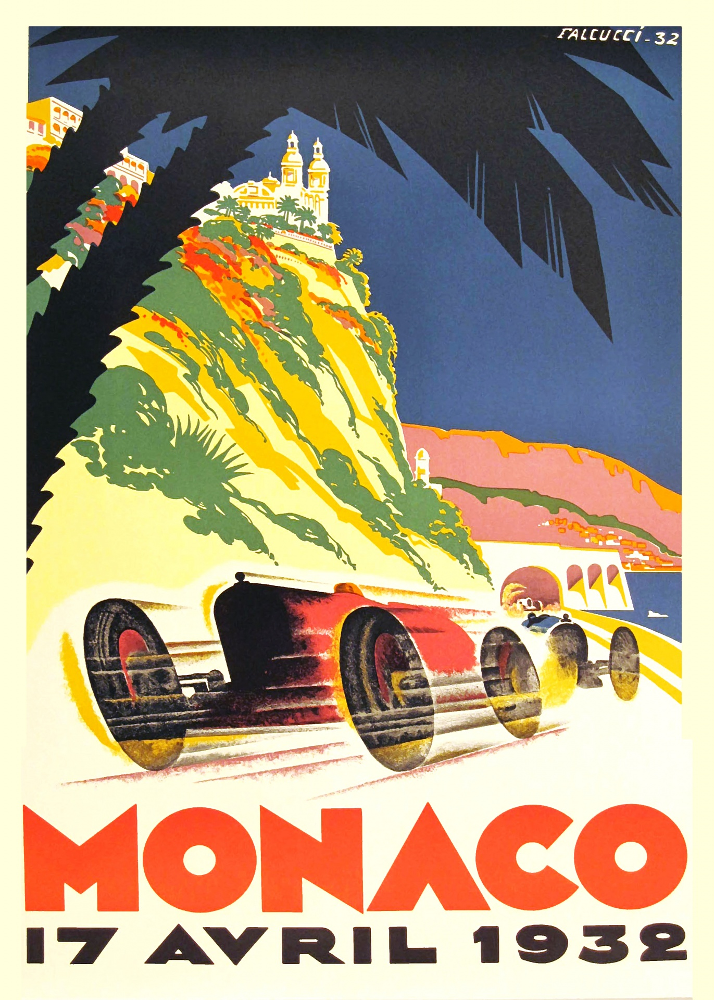

La joya de la corona del automovilismo
El Gran Premio de Mónaco es una de las carreras más prestigiosas y exigentes del calendario mundial de la Fórmula 1. Celebrado en las estrechas y glamurosas calles del Principado desde 1929, conforma junto a las 500 Millas de Indianápolis y las 24 Horas de Le Mans la codiciada Triple Corona del Automovilismo.

Aspectos destacados del Gran Premio
- Precisión milimétrica:
- Importancia de la clasificación:
- Estrategia de paradas:
Pilotos con más victorias en Mónaco
| Piloto | Nacionalidad | Victorias | Años destacados |
|---|---|---|---|
| Ayrton Senna | Brasil | 6 | 1987, 1989, 1990, 1991, 1992, 1993 |
| Graham Hill | Reino Unido | 5 | 1963, 1964, 1965, 1968, 1969 |
| Michael Schumacher | Alemania | 5 | 1994, 1995, 1997, 1999, 2001 |
| Alain Prost | Francia | 4 | 1984, 1985, 1986, 1988 |
Información y enlaces oficiales
Para consultar las clasificaciones en vivo, tiempos oficiales y calendario de la temporada completa, puedes visitar el portal de la Página Oficial de la Fórmula 1 (F1) o la web del Automobile Club de Monaco.